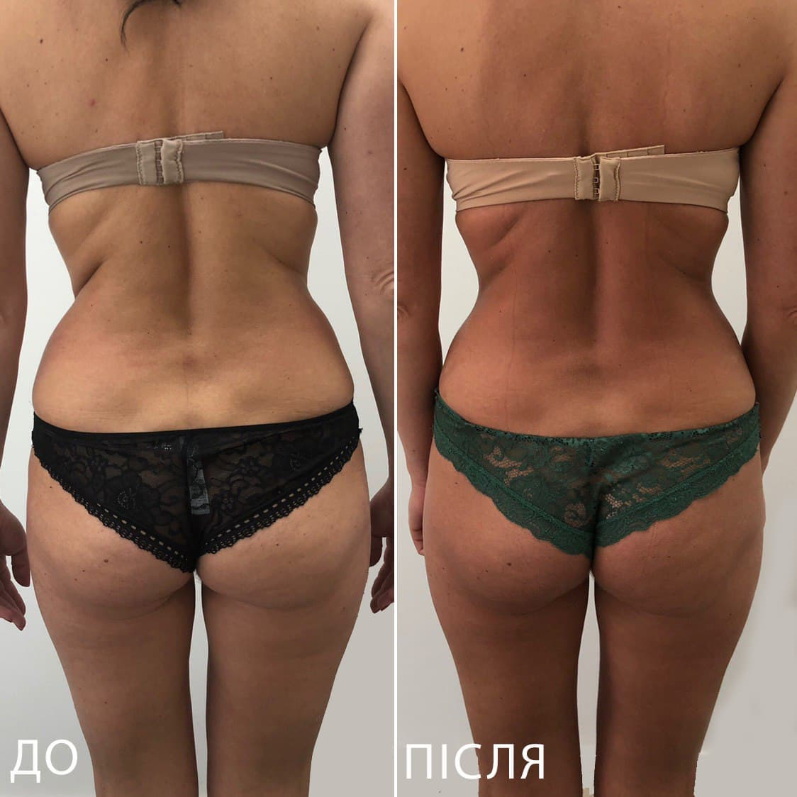
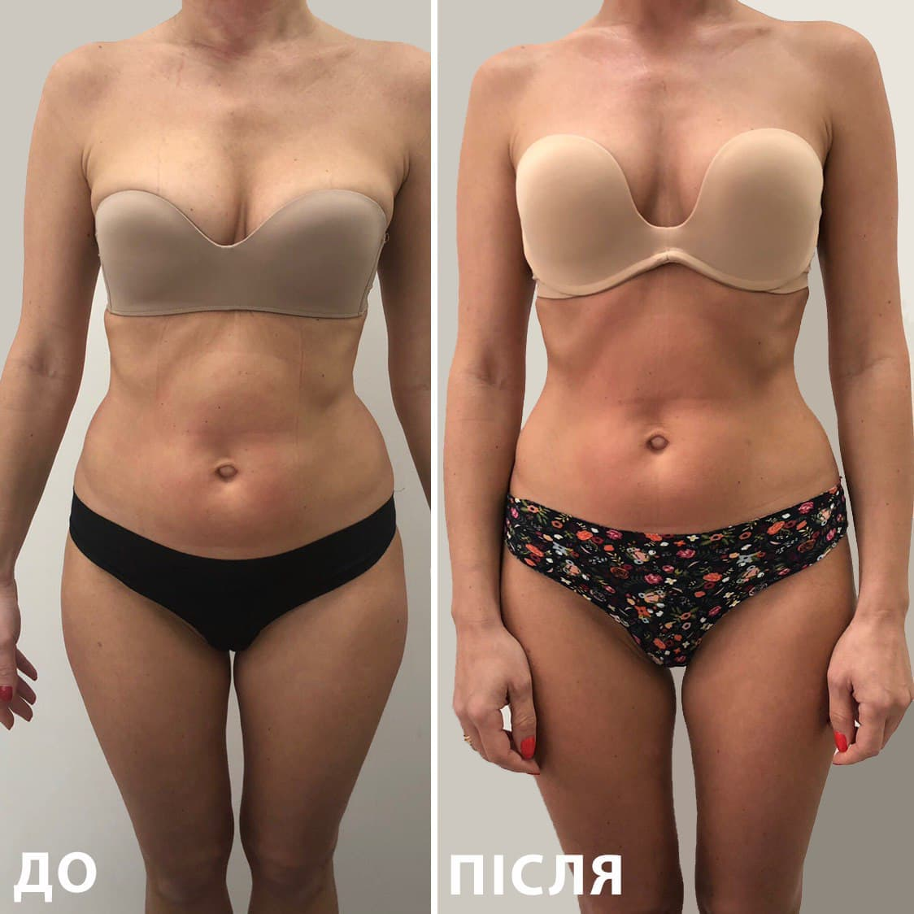

Відпочиньте від повсякденної метушні та отримайте незабутнє розслаблення в нашому кабінеті масажу.
Записуйтесь за телефоном 050 - 521 - 65 - 50. Ми чекаємо на Вас!


Ось деякі плюси та мінуси моделювання фігури:
Плюси
Мінуси
Варто зазначити, що зміна форми тіла повинна бути здійснюватися з розумінням та здоровим підходом, щоб уникнути негативних наслідків та досягти позитивних результатів.
Тож не гай часу та записуйся на моделювання фігури вже зараз! Твоя мрія про ідеальне тіло стане реальністю!
Кардіотренування: Це вправи на кардіо, такі як біг, скакалка, еліптичні тренажери тощо. Вони допомагають знизити загальний вміст жиру в тілі та збільшити м'язову масу.
Силове тренування: Це вправи з використанням важків, такі як штанги, гантелі, кабельні тренажери тощо. Вони допомагають збільшити м'язову масу та тонус, підвищують метаболізм та допомагають знизити вміст жиру в тілі
Функціональне тренування: Це вправи, що допомагають покращити рухові можливості та координацію тіла. Вони зміцнюють м'язи, збільшують гнучкість та допомагають запобігати травмам.
Масаж: Масаж допомагає покращити кровообіг та лімфатичний дренаж, зменшує набряки, поліпшує тонус м'язів та зменшує ризик травм.
Дієти: Дієти можуть допомогти зменшити вміст жиру в тілі та підтримувати здорове тіло. Це можуть бути різноманітні дієти, які містять менше калорій, менше жирів тощо.
Вибір технік моделювання фігури залежить від ваших цілей та особистих переваг. Важливо звернутися та записатись і я допоможу вам обрати оптимальну програму тренувань та дієти для досягнення бажаних результатів.
Моя програма моделювання фігури допоможе вам розкрити справжню красу вашого тіла в кожному русі.
Пропоную індивідуальний підхід до кожного клієнта, щоб забезпечити максимально ефективні результати.
За допомогою моєї програми моделювання фігури ви зможете відчувати себе впевнено та сяючо в кожному русі
Ефективність масажу та моделювання фігури залежить від конкретних обставин і мети процедур.
Тож не гайте часу та приєднуйтесь до моєї програми вже сьогодні!

Пропонуємо широкий вибір масажних послуг для всіх вікових груп та проблем здоров'я. З радістю допоможу вам вибрати оптимальний варіант та забронювати зручний час відвідин.
Масажний кабінет займається професійним підходом до кожного клієнта. Використовую тільки найкращі масажні техніки та інструменти, щоб забезпечити максимальний ефект від процедур. Також стежимо за гігієною та безпекою в масажному кабінеті, щоб ви могли насолоджуватися масажем у комфортних умовах.
Масажні послуги доступні за розумними цінами, що дозволяє кожному клієнту відчути користь від процедури та отримати задоволення від відпочинку.Пропоную не лише класичний масаж, а й різноманітні техніки, такі як шведський масаж, тайський масаж та інші, які допоможуть вам відчути глибоку розслабленість і зняти напругу з м'язів.
Дбаємо про комфорт та безпеку наших клієнтів, тому використовуємо тільки найкращі масажні олії та креми, які не містять шкідливих речовин. Маю високу кваліфікацію та досвід роботи з клієнтами різного віку та з різними проблемами здоров'я. Ви можете бути впевнені, що ви отримаєте найкращий сервіс та насолоджуватиметесь кожною миттю масажу в масажному кабінеті.